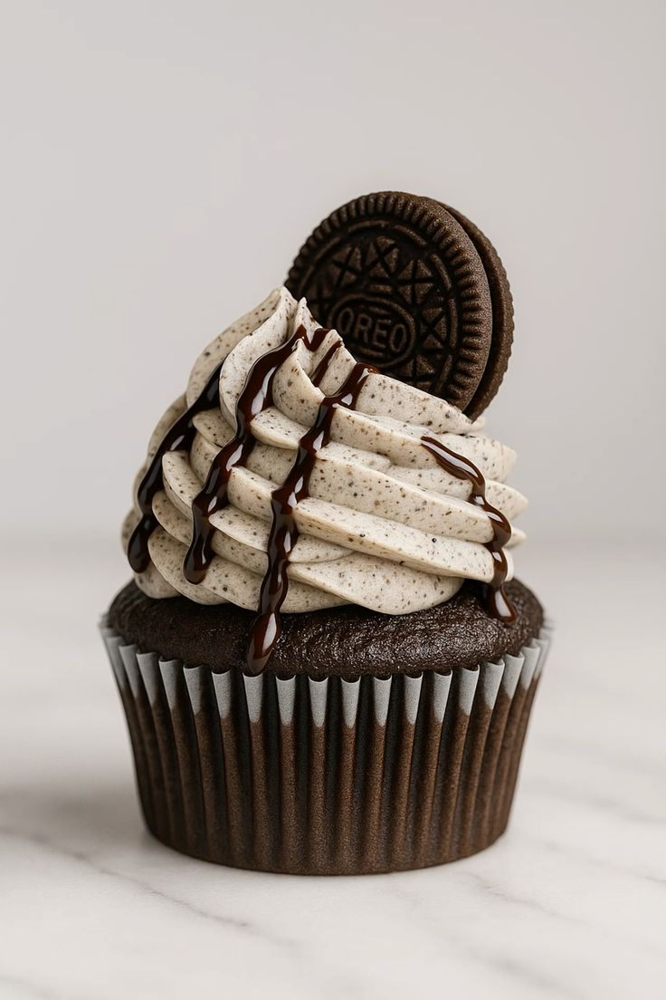
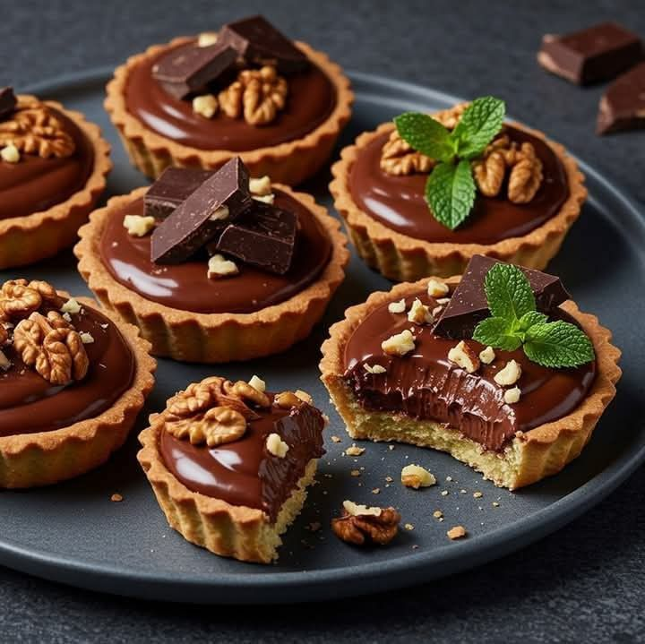

Misión
En Torta & Arte nos dedicamos a crear experiencias únicas a través de la elaboración de tortas artesanales,
únicas en su diseño, sabor y presentación.
Nuestro compromiso es ofrecer productos de la más alta calidad,
elaborados cuidadosamente con ingredientes frescos, naturales y seleccionados
para asegurar la satisfacción total de nuestros clientes. Nos apasiona transformar cada
torta en una obra de arte, donde la creatividad y la innovación se fusionan
para ofrecer una variedad de opciones que se adapten a diferentes gustos, ocasiones y estilos de vida.
Queremos que cada cliente sienta el cuidado y dedicación
que ponemos en cada creación, brindando un servicio personalizado
que responda a sus necesidades específicas y preferencias. La atención al cliente
y la excelencia en el servicio son pilares fundamentales para nosotros, por eso buscamos
crear relaciones duraderas basadas en confianza y respeto mutuo.
En nuestro proceso productivo, empleamos técnicas modernas y tradicionales, combinando la experiencia artesanal con
tendencias actuales en decoración y sabor. Nos esforzamos por mantener un ambiente de trabajo motivador y
respetuoso, que fomente la innovación y el perfeccionamiento continuo.
Nuestro objetivo también es promover una cultura de sostenibilidad,
usando insumos responsables y cuidando el impacto ambiental en nuestras operaciones.
Nos sentimos responsables de contribuir a la comunidad y al mismo tiempo ofrecer productos
que generen alegría en cada celebración.
En definitiva, en Torta & Arte buscamos ser más que una pastelería:
aspiramos a ser un referente en arte, sabor y calidad en cada torta que creamos,
entregando experiencias memorables que deleiten los sentidos y expresen la pasión por elaborar obras
maestras dulces.
.jpg)
Visión
Nuestra aspiración en Torta & Arte es consolidarnos como la pastelería de referencia en la región,
reconocidos por la excelencia y la creatividad en la elaboración de tortas artesanales que combinan arte,
sabor y elegancia. Queremos ser una marca que trascienda las expectativas de nuestros clientes, logrando
una presencia importante en eventos, celebraciones y momentos especiales.
Visualizamos un crecimiento sostenido a través de la innovación constante,
desarrollando nuevos sabores, técnicas de decoración y estilos que se adapten a
las tendencias y preferencias del mercado. Aspiremos a ampliar nuestra oferta,
incursionando en nuevas categorías y formatos que puedan llegar a diferentes segmentos,
siempre manteniendo nuestra filosofía de calidad y atención personalizada.
Buscamos también que Torta & Arte sea un espacio donde se fomente la cultura del arte en la pastelería,
promoviendo la formación de nuestro equipo y colaborando con artistas, diseñadores y proveedores locales.
Nuestro objetivo es crear un impacto positivo en la comunidad, siendo un referente de buen gusto, sofisticación y
responsabilidad social. A largo plazo, queremos expandir nuestra presencia a nivel regional y nacional,
llevando nuestro concepto de tortas artesanales y obras de arte a nuevas localidades y clientes que valoran
la calidad, el diseño y la exclusividad. Nuestro sueño es que cada torta que sale de nuestro taller sea una
obra maestra que deje una huella imborrable en las celebraciones de quienes confían en nosotros. En resumen,
la visión de Torta & Arte es ser sinónimo de excelencia, innovación y arte en la pastelería,
creando un legado que inspire nuevas generaciones y que siga elevando el nivel de la repostería
artesanal en nuestra comunidad.

Valores
La base de nuestra identidad empresarial. La calidad es nuestro pilar principal; creemos que solo mediante el uso de | ingredientes frescos y naturales podemos garantizar productos que deleiten los sentidos y que se distingan por su
sabor y textura. Nos esforzamos en mantener altos estándares en cada torta, desde la preparación hasta la entrega,
asegurando que cada cliente reciba algo especial y único en cada ocasión.
En Torta & Arte nuestros valores guían cada paso que damos y forman parte de nuestra cultura empresarial. La creatividad
es fundamental;
buscamos constantemente nuevas formas de sorprender a nuestros clientes con diseños innovadores y sabores únicos.
Creemos que cada torta debe ser una obra de arte, reflejando la pasión y dedicación que ponemos en cada creación.
La creatividad y la innovación son esenciales en nuestro trabajo diario. Nos comprometemos a experimentar con nuevas
ideas, diseños y combinaciones de sabores para sorprender y satisfacer las expectativas de nuestros clientes. Promovemos
un ambiente en el que la inspiración fluya libremente, valorando la originalidad y la estética en cada pieza. La pasión
que sentimos por el arte y la repostería se refleja en cada trabajo, alimentando nuestra motivación para seguir
perfeccionando nuestras habilidades y conocimientos.
La atención al cliente es otro de nuestros valores fundamentales. Nos esforzamos por brindar un servicio excepcional,
escuchando las necesidades y deseos de nuestros clientes para ofrecerles una experiencia personalizada y memorable.